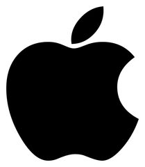

I chose to pursue a Bachelor’s degree in Computer Science to build my academic career. I grew up in the era of computers, and I was always the one figuring out how to solve problems on my own laptop.
Right now, this field is booming, especially with the huge wave of AI, and salaries around the world are very attractive. What excites me the most, though, is the flexibility it offers: the ability to work from anywhere.
My first semester was quite challenging. We had five different classes, most of which were focused heavily on math. Even though it’s a coding course, it often felt like pure math. Still, one of the classes gave us more practice with C, which was very useful.
One day, while watching a random YouTube video, I came across an ad where someone was talking about how amazing David Malan’s way of teaching CS50 was. Out of curiosity, I decided to give it a try. At first, it was fun because I already knew some tricks in C, but things got much harder around weeks 3, 4, and 5. Later, we moved on to Python and SQL, which were so much more enjoyable to practice. It was exciting to learn how these languages work, especially compared to C, since they felt easier and less frustrating (and didn’t make me angry, haha).
My current academic goal is to earn an internship at the Apple Developer Academy at CIN-UFPE. I visited the Academy to learn more about the Swift programming language and to meet people. I even talked to some of the students who work there, and it was amazing to realize how well-prepared they are to work on all kinds of development projects. Since I was a kid, when I switched from my first Android phone to an iPhone, I was shocked at the huge difference between the two systems. As a Computer Science student, it has now become a dream of mine to work and develop for Apple, while learning everything they have to teach.
Each link has a title that matches with its content.